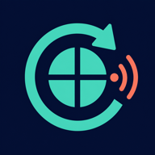

PRIVATE DEVICE PAIRING
Codex Reset Watch
1
Add to your Home Screen
In Safari, tap Share, then Add to Home Screen. Open the installed app before continuing.
2
Enable notifications
Permission is requested only when you tap the button.
The setup link did not include a key. Paste the public key shown by the CLI.
Waiting for setup.
Notifications are enabled
Copy this one-time pairing code and paste it into the terminal. It contains a push address and encryption keys, but no phone number or Codex credentials.